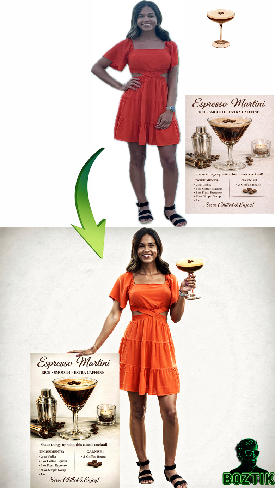
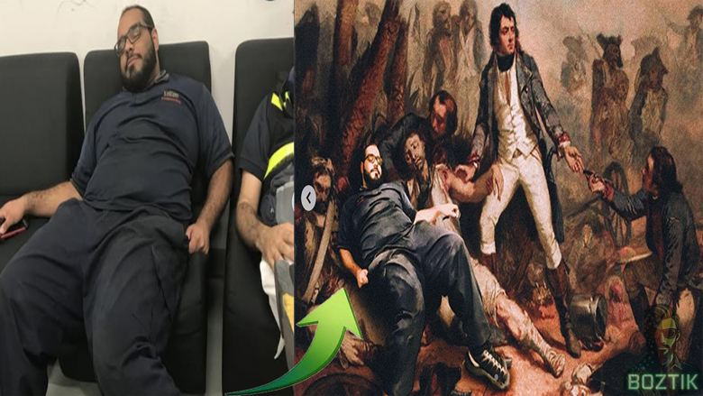
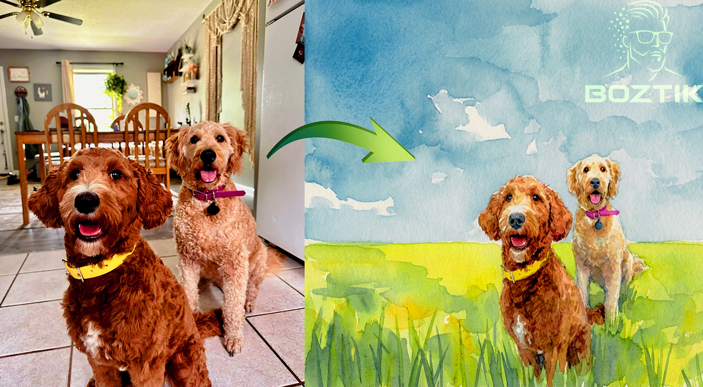

A selection of restoration, retouching and creative image work. Every project is shown with its source material and finished result, so the decisions behind the edit are part of the story.
Different images call for different approaches. Some need careful repair; others need precise reconstruction or a completely new visual direction. The common thread is attention to detail and respect for the original subject.
THE PROJECT ARCHIVE
Selected projects
Browse the work by discipline, or view the complete collection.
6projects shown
01 / 06
Photo restorationOriginal → Restored
Bringing damaged photographs back to life
A heavily marked black-and-white print, repaired and colorized with care. The work focused on removing visible damage while keeping the portrait believable and recognisable.
Stains, scratches and pen marks removed
Damaged facial detail carefully reconstructed
Original monochrome portrait colorized
02 / 06
Object removalOriginal → Edited
Keeping the moment. Removing the distractions.
Two passersby interrupted a family photograph. They were removed while rebuilding the water and background so the attention returns to the original moment.
Both passersby removed
Background and water reconstructed
Original atmosphere retained
03 / 06
Creative compositingOriginal → Composite
An everyday portrait, a different world
An indoor snapshot reimagined as a fantasy forest scene. The subject was integrated into a new environment with coordinated color and lighting.
Original subject separated from the background
Fantasy forest and butterfly details introduced
Lighting and color graded to unify the scene

04 / 06
Commercial conceptSource elements → Final
Building a promotional image from separate elements
A cut-out subject, cocktail glass and recipe card brought together in one composed promotional concept, with a consistent background and visual hierarchy.
Subject isolated from the source photograph
Glass and recipe card positioned into the composition
Textured neutral background added

05 / 06
Creative compositingOriginal → Composite
A candid photograph placed inside a classical painting
A modern photograph integrated into a classical painted scene, with adjustments to the subject's appearance and lighting to help the composite feel cohesive.
Subject separated from the original photograph
Clothing and lighting adapted to the painted scene
Composite balanced to match the artwork

06 / 06
Watercolor transformationPhotograph → Artwork
From photograph to watercolor
An everyday photograph of two dogs reimagined as a watercolor-style illustration in an outdoor setting. Their expressions, colors and individual character remain central to the transformation.
Original photograph retained as the visual reference
Painterly textures and outdoor scenery introduced
Expressions and individual character preserved
Showing all 6 selected projects.
YOUR IMAGE, HANDLED WITH CARE
Have a photograph that deserves a second look?
From restoring a family keepsake to removing distractions or creating a custom composite, tell me what you have in mind and we can work out the right approach.
 01 / 06
01 / 06